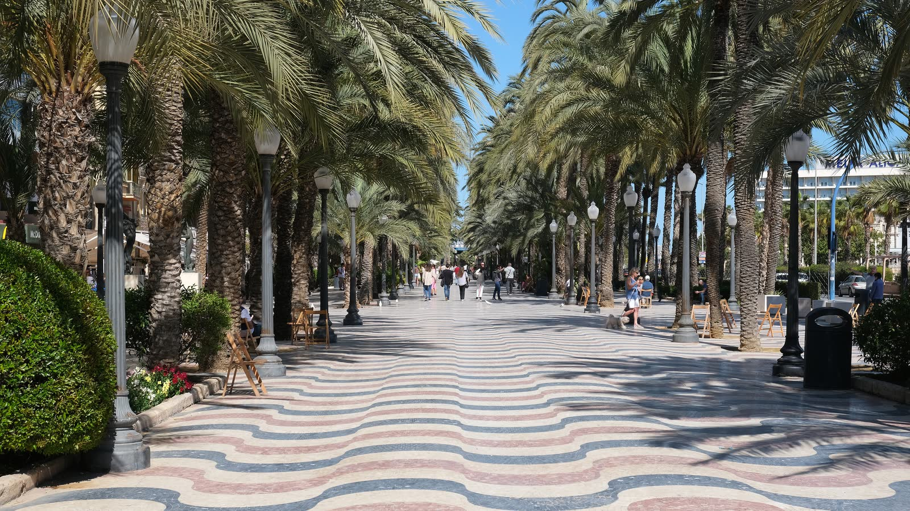
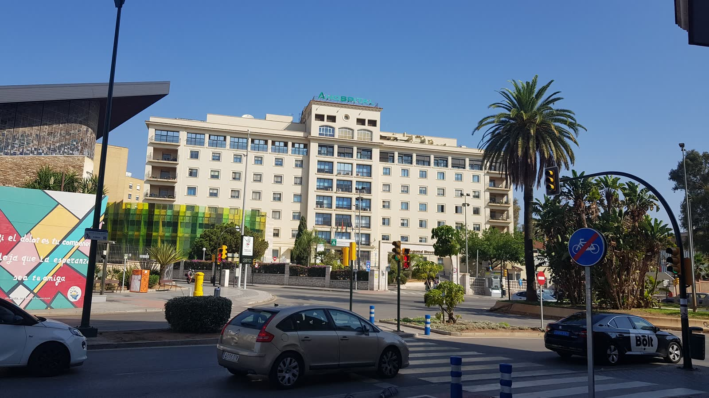

Cero Especulación
Eliminamos el "me han dicho" y el "parece que". Todo lo que incluimos en el informe ha sido validado.
Nuestro Proceso
Cómo trabajamos para que usted reciba información real
Así trabajamos para que usted reciba información fiable y útil: sin atajos, sin datos genéricos y con verificación directa sobre el terreno. Tres pasos claros que garantizan la calidad de cada informe que entregamos.
Recopilamos información de fuentes oficiales y registros públicos, y la contrastamos con visitas presenciales sobre el terreno.
Convertimos los números en algo comprensible y útil. No basta con los datos: hay que entender qué significan en la vida real de cada zona.
Todo lo analizado se resume en un informe claro y ordenado, entregado en el plazo acordado. Sin tecnicismos innecesarios.
Filtro Romvill
En el mercado actual, el problema no es la falta de información, sino el exceso de datos irrelevantes o sesgados. Nuestro trabajo es actuar como su analista experto.
Eliminamos el "me han dicho" y el "parece que". Todo lo que incluimos en el informe ha sido validado.
Los satélites no cuentan toda la historia. Pisamos el terreno, medimos los tiempos de acceso.
No intermediamos en operaciones ni promocionamos zonas. Nuestro único objetivo es la radiografía exacta del lugar.
Cruzamos hasta 5 fuentes de datos por dimensión analizada.
Detectamos los detalles del entorno que no aparecen en un anuncio pero que conviene conocer antes de decidir.
Identificamos los proyectos e infraestructuras recogidos en la planificación urbanística oficial de la zona.
Objetividad
Trabajo de campo
No analizamos una zona desde un despacho. Toca cada punto y mira qué comprobamos en la propia zona.




01 / 05
Toca un punto
El trabajo de gabinete ordena los datos; el terreno los confirma. Recorremos la zona a distintas horas, comprobamos in situ lo que las fuentes oficiales describen y contrastamos cada observación antes de incorporarla al expediente. Lo que no se puede verificar no entra en el informe.
Transparencia · Metodología
En ROMVILL empleamos herramientas de inteligencia artificial en la fase de recopilación y estructuración de la información: nos permiten reunir y ordenar grandes volúmenes de datos de fuentes oficiales y públicas con rapidez y consistencia.
El paso decisivo, sin embargo, es humano. Un analista profesional verifica, contrasta, interpreta y firma cada informe antes de su entrega. Ninguna conclusión llega al cliente sin haber pasado por ese juicio experto. La tecnología nos hace más rápidos; el criterio que usted recibe es humano.
Si quiere saber más sobre cómo elaboramos los informes o tiene preguntas concretas sobre su caso, estamos para ayudarle.